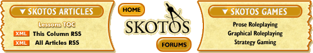

|
The Messageby Sandra Powers Greetings, and welcome to my new column, Lessons from the Live Team. My name is Sandra "srand" Powers. From most of the past four years I have been variously the producer, lead engineer, and primary game systems designer for the Asheron's Call 1 live team, as well as working on the Throne of Destiny expansion. (Just so we’re clear on the terminology: a live team is the team that works on a game after it launches or "goes live’") Asheron's Call 1 is a large-scale commercial MMO run by Turbine, Inc. At one time, way back when, AC1 was considered one of the "big three" MMO games on the market (along with UO and EQ), although in subsequent years it has been rather eclipsed by new giants like World of Warcraft and EQ2 and … well, pretty much everything that came out after it. I learned a lot about MMOs while I was on the live team: not only about the maintenance stuff like community and customer service and what to do when the servers come crashing down at 3 am, but also a whole lot about MMO design and development. Just as no battle plan survives contact with the enemy, no game design ever makes it past the players unscathed. Live development provides the perfect environment for rapid iteration of game design. Here you can quickly learn both the underlying principles that allow you to embellish and expand your game successfully, and the underlying principles that cause your players to riot and send you death threats – or worse yet, quietly unsubscribe. Perhaps the most important lesson I learned is that the knowledge you gain in live development often comes three years too late. You really needed to have that knowledge before you even started production. Indeed, that is half of my purpose here: to share with you the hard-won wisdom of the live team so that you can incorporate it into your next game before it’s too late. The development cycle for a major MMO is too long and the drop-out rate of developers too high for us to ignore this source of knowledge. In addition, live development is becoming increasingly important in its own right. In today's unstable, hit-driven game market, the ability for a single MMO to continue to earn its parent company a profit for many, many years after the initial launch is extremely attractive. Of course, in exchange for long-term profits, a company must also commit to long-term expenses in the form of customer service, hardware operational costs, etc. And if they want to maximize continuing profits, the company will almost certainly need to spring for some sort of continuing development after the game has gone live. An MMO may be in development for over three years. That's a long development cycle. But if you do it right, your game will stay up and running for five years, ten years, even more. In short, your game will be live for more time than it spent in development. Or more accurately – because you never actually stop developing – your game will be in live development for more time than you were in pre-launch development. As an industry we have a decent handle on pre-launch development, but it pays to learn more about the other half (or more) of our life cycle. So that's the second half of my purpose here: to share what I know about how to handle live development. It's not harder than pre-launch development; it's just a bit different. I'll be heavily drawing from my experiences as a developer on Asheron’s Call 1, of course, as well as from my vicarious experiences with other MMO games. Mostly I'll be talking about the big commercial 3D games because that’s where my knowledge lies. But although the details may vary, and the scale is often different, many of these lessons apply just as well to smaller-scale games, prose games, non-subscription games. To sum up: Live is important. Live will determine if your game disappears after a year, or survives over the long-haul (earning your company a nice steady profit along the way). Moreover, what you learn from live can make you a better developer in general and strengthen the design of your next game. Or so I believe. I'm a pretty vocal evangelist for live teams and live development. It’s what I do; it's what I love. And it’s what I’m going to talk about here. So there you are. Next time: We'll start by analyzing the major forms of live development, from bug fixes to boxed expansions, and see what kind of roles they fill in keeping your game afloat. |